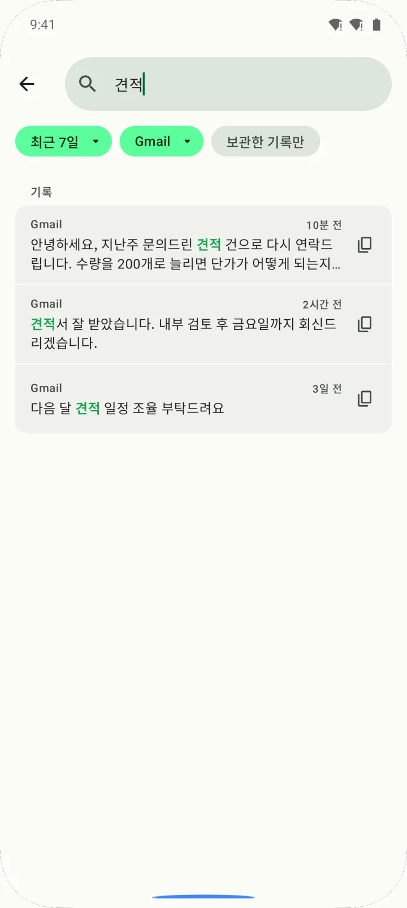
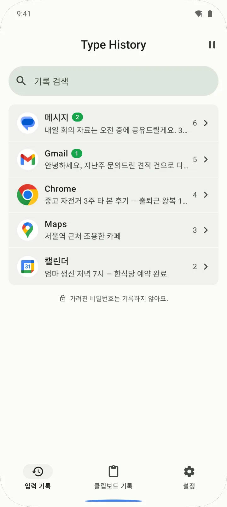
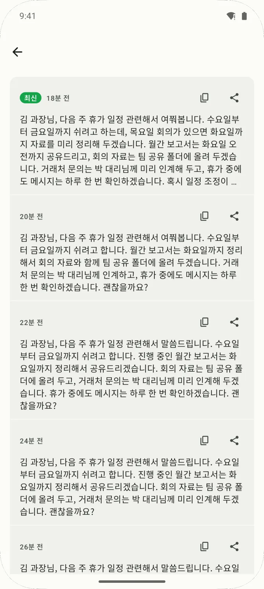
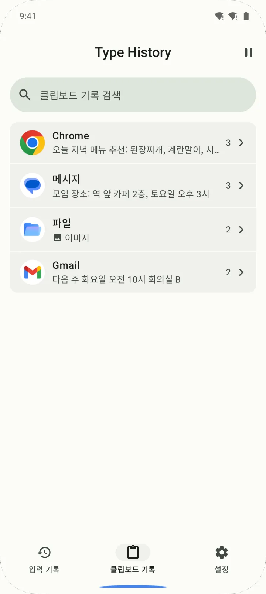
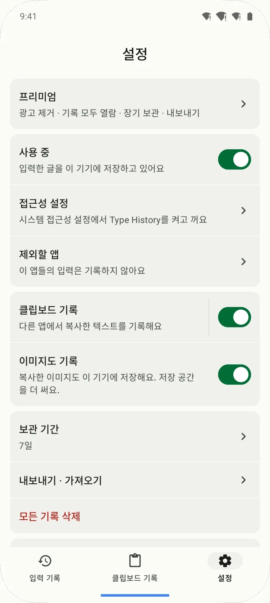

앱별로 찾아서 그대로 복사
'입력 기록' 탭에서 앱마다 묶어 보고, 단어·날짜·앱으로 검색합니다. 찾은 글은 고친 뒤 복사하거나 공유할 수 있습니다.

Type History는 다른 앱에 입력한 글과, 켜 두면 복사한 글까지 기기 안에 자동으로 남겨 두어, 앱이 튕기거나 전송이 실패해 날아간 글을 다시 찾아 복사할 수 있게 해 주는 Android 앱입니다.
무료(광고 포함)로 쓸 수 있고, 광고 제거와 최대 1년 보관은 구독이 아닌 한 번 구매하는 평생 이용권(₩27,000)으로 엽니다.
Google Play에서 받기
다른 앱에 입력한 글을 이 기기 안에 자동으로 남겨 둡니다. 날아간 메시지·메일·댓글을 찾아 그대로 복사하세요.
"저장" 버튼은 없습니다. 다른 앱에 글을 쓰는 동안 이 기기에 계속 기록하고, 키보드는 쓰던 것을 그대로 씁니다.
기록은 기기 안 데이터베이스에만 저장되고 서버로 보내거나 동기화하지 않습니다. 보관 기간이 지난 기록은 자동으로 지워집니다(기본 7일).
'입력 기록' 탭에서 앱마다 묶어 보고, 단어·날짜·앱으로 검색합니다. 찾은 글은 고친 뒤 복사하거나 공유할 수 있습니다.

같은 글을 고쳐 쓴 이력을 덮어쓰지 않고 남깁니다. 버전 히스토리에서 이전 문장을 골라 복사합니다.

설정에서 클립보드 기록을 켜면 다른 앱에서 복사한 글을 '클립보드 기록' 탭에 모읍니다. 기본은 꺼져 있고, 복사한 이미지까지 남기도록 켤 수도 있습니다.

PIN과 지문·얼굴 인증으로 앱을 잠급니다. 기록하지 않을 앱을 고를 수 있고, 설정의 '사용 중' 스위치를 끄면 접근성 서비스가 꺼져 기록이 멈춥니다.

| 무료 | 프리미엄 (평생 이용권) | |
|---|---|---|
| 입력 기록·클립보드 기록·검색·편집 | ✓ | ✓ |
| 보관 기간 | 1일·3일·7일 중 선택 | 1일~1년 중 선택 (30일·90일·180일·1년 추가) |
| 앱마다 열어 볼 수 있는 기록 | 최근 10개 (넘는 기록은 지우지 않고 잠가 둠) | 전부 |
| 클립보드 기록 보관 | 복사한 뒤 7일 | 고른 보관 기간을 따름 |
| 영구 보관(자동 삭제 제외) | — | ✓ |
| 파일로 내보내기·가져오기 | — | ✓ |
| 광고 | 있음 | 없음 |
| 가격 | 무료 | ₩27,000 한 번 (첫 실행 후 7일 동안 ₩14,000) |
구독이 아닙니다. 한 번 사면 계속 쓰고, 앱 안에서 구매를 복원할 수 있습니다. 가격은 한국 기준이며 Google Play가 나라별 통화로 보여 줍니다.
| Type History | 키보드에 든 클립보드·실행 취소 | 클립보드 관리 앱 | 메모 앱에 먼저 쓰기 | |
|---|---|---|---|---|
| 다른 앱에 입력한 글이 저절로 남나요 | 남습니다 (접근성 서비스가 켜진 동안) | 보통 복사한 것만 남습니다 | 복사한 것만 남습니다 | 직접 옮겨 쓴 것만 남습니다 |
| 쓰던 키보드를 그대로 쓰나요 | 그대로 씁니다 | 그 키보드를 써야 합니다 | 보통 그대로 씁니다 | 그대로 씁니다 |
| 복사한 글을 빠짐없이 모으나요 | 선택 기능이고, 일부 복사는 빠집니다 | 그 키보드를 쓰는 동안 모읍니다 | 주된 기능입니다 | 해당 없음 |
| 고쳐 쓰기 전 문장을 되찾나요 | 버전 히스토리로 되찾습니다 | 보통 안 됩니다 | 보통 안 됩니다 | 직접 남긴 것만 |
| 따로 주는 권한 | 접근성 서비스가 필요합니다 | 키보드로 설정만 하면 됩니다 | 앱마다 다릅니다 | 필요 없습니다 |
| 다른 기기와 동기화 | 안 됩니다 (기기에만 저장) | 키보드마다 다릅니다 | 앱마다 다릅니다 | 앱마다 다릅니다 |
범주 칸은 일반적인 특징이며 앱마다 다를 수 있습니다.
네, Type History를 켜 둔 뒤에 입력한 글이라면 되살릴 수 있습니다. Type History를 열어 '입력 기록' 탭에서 그 앱을 누르거나 검색해 찾은 뒤, 복사해서 다시 붙여넣으면 됩니다. 고쳐 쓴 글은 버전 히스토리에서 이전 문장을 고를 수도 있습니다.
아니요, 찾을 수 없습니다. Type History는 접근성 서비스가 켜진 동안 입력한 글만 기록하므로, 그전에 쓴 글은 남아 있지 않습니다.
입력 기록, 클립보드 기록, 검색, 편집은 모두 무료입니다. 무료 버전은 보관 기간을 최대 7일까지 고를 수 있고, 앱마다 최근 10개를 열어 볼 수 있으며, 클립보드 기록은 복사한 뒤 7일까지 보관합니다. 광고가 나옵니다.
구독이 아니라 한 번 사는 평생 이용권이고, 한국 가격은 ₩27,000입니다. 첫 실행 후 7일 동안은 웰컴 할인가 ₩14,000으로 살 수 있습니다. 광고 제거, 열람 제한 해제, 최대 1년 보관, 영구 보관, 파일 내보내기·가져오기가 풀립니다.
아니요, 입력 기록은 이 기기의 데이터베이스에만 저장되고 전송·동기화되지 않습니다. 네트워크는 광고 표시, Google Play 구매 확인, 익명 사용 통계·오류 리포트, 개인정보처리방침 페이지 열기에만 쓰며, 기록은 그 통신에 들어가지 않습니다. 계정과 로그인도 없습니다.
네, 기록과 복구는 인터넷 없이도 됩니다. 다만 광고, 사용 통계, 구매 확인에는 인터넷을 씁니다.
쓰던 키보드를 바꾸지 않고 여러 앱의 입력을 기록하려면, Android 접근성 서비스로 입력란의 글을 읽어야 하기 때문입니다. 켜기 전에 무엇을 읽는지 안내하고 동의를 받으며, Android 설정에서 언제든 끌 수 있습니다. 연락처·사진·위치·마이크·카메라 권한은 요청하지 않습니다.
가려진 비밀번호 입력란은 읽지 않고 건너뜁니다. 화면에 보이게 입력한 비밀번호나 메모 앱에서 복사한 비밀번호는 기록될 수 있으니, 그런 앱은 '제외할 앱'으로 지정해 두세요.
아니요. Type History는 내가 이 기기에서 입력한 글과, 켜 두면 내가 복사한 글만 남깁니다. 다른 사람이 보낸 메시지를 모으거나, 삭제된 메시지를 복구하지 않습니다.
클립보드 기록은 복사 버튼을 누르거나 '복사됨' 안내가 뜬 것을 감지했을 때만 남기므로, 일부 복사는 빠집니다. Android 10부터는 앱이 백그라운드에서 클립보드를 마음대로 읽을 수 없기 때문입니다. 기록할 때 ‘Type History이(가) 클립보드에서 붙여넣음’ 같은 시스템 안내가 보일 수 있습니다.
클라우드 백업과 동기화는 없어서, 프리미엄의 내보내기로만 옮길 수 있습니다. 기록을 파일(JSON)로 저장해 새 휴대폰에서 가져오면 됩니다. 이 파일은 암호화되지 않으니 안전한 곳에 보관하세요.
아니요, Type History는 Android 10 이상에서만 쓸 수 있습니다. iOS 앱은 없습니다.